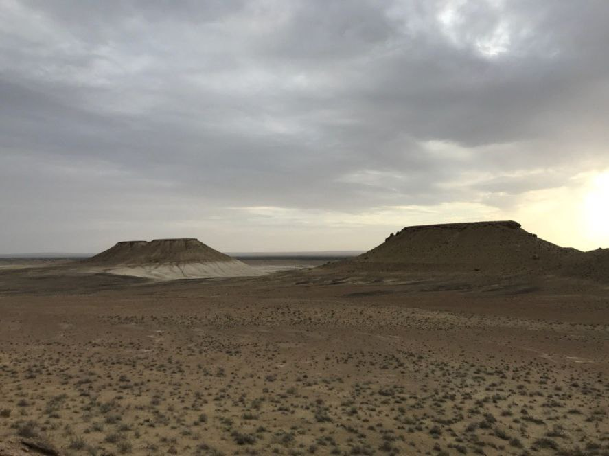

"UCH-O‘CHOQ MOZOR QO‘RGʻONI"
1. Me’moriy inshootning nomi:
"UCH-O‘CHOQ MOZOR QO‘RGʻONI"
2. Me’moriy inshoot tiklangan yil:
mil.av. VIII asrdan to milodiy V-VII asrlar
3. Me’moriy inshoot joylashgan manzil:
Buxoro va Xorazm vohasini bog‘lovchi mashhur “Sepoya” yo‘lida joylashgan.
4. Me’moriy inshootning qurilish materiallari:
Xom g‘isht, paxsa - guvala, qum, yog‘och
5. Inshootning bosh fasadi h.k.lar:

6. Me’moriy inshootning o‘lchamlari
Tepalik markazida aylana shakldagi diametri 1000 m ga yaqin va chuqurligi taxminan 70-80 m dan iborat krater mavjud.
7. Me’moriy inshoot to‘g‘risida tarixiy ma’lumot:
Uch-o‘choq tepaligi kuchli yemirilgan paleogen davri yotqiziqlaridan tashkil topgan balandlik bo‘lib, mazkur krater meteorit tushishi oqibatida vujudga kelgan. Kraterning janubiy qismi kuchli shamollar ta’sirida yemirilgan va eroziyaga uchragan. Natijada janubiy-sharqiy qismida yuza qismi yassi, balandligi 60-70 m li konussimon 4 ta tepalik hosil bo‘lgan. Bu tepaliklar jozibali ko‘rinishga ega bo‘lib, mahalliy aholi va o‘lkashunos tarixchilar orasida “Xorazm piramidalari” deb olgan. Aholi o‘rtasidagi afsonalarga ko‘ra, bu yerda Dev tepaliklar ustiga qozon o‘rnatib ovqat pishirgan emish. Ana shundan kelib chiqib mazkur joyga “Uch-o‘choq” deb nom berilgan ekan. Bu yodgorliklarni o‘rganish jarayonida dafn marosimlari bilan bog‘liq tarixiy ma’lumotlar olindi. Shuningdek, qadimgi sak qabilalari davriga (mil.av. VIII-V asrlar) oid turli tipdagi bronza o‘q-yoy uchlari aniqlandi. Uch o‘choq yodgorligi tabiiy tepaliklar majmuasidan tashkil topgan bo‘lib, uning hududidan mil.avv. 7-6 – asrlarga oid ko‘chmanchilarning mozor qo‘rg‘onlari S.R.Baratov rahbarligida o‘rganilgan.
8. Me’moriy inshootning texnik holati:
Yer ustki qism 100% devor konstruksiyalari ekologik va texnogen ta’sirlar natijasida yo‘qolib ketgan
BOSH SAHIFAGA QAYTISH